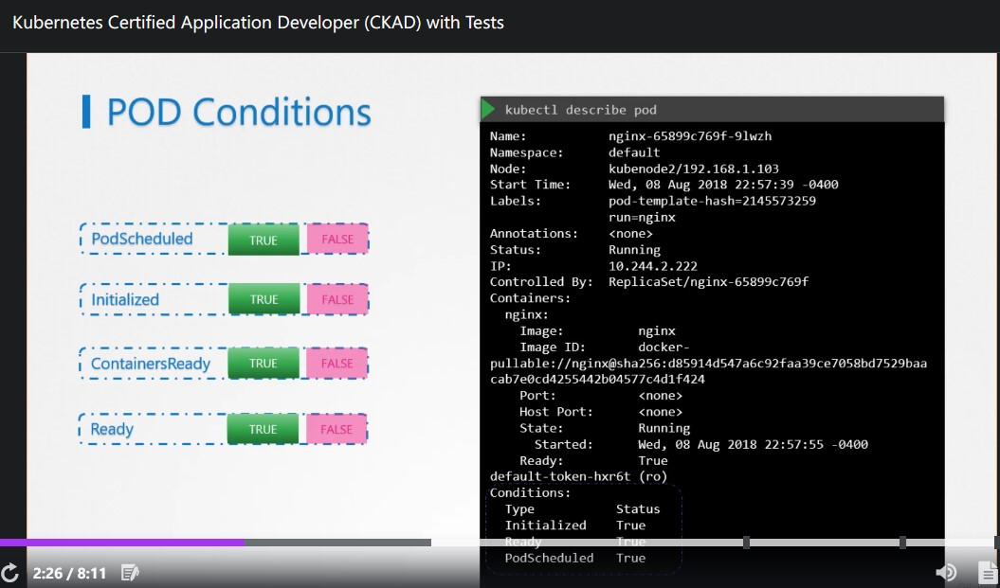
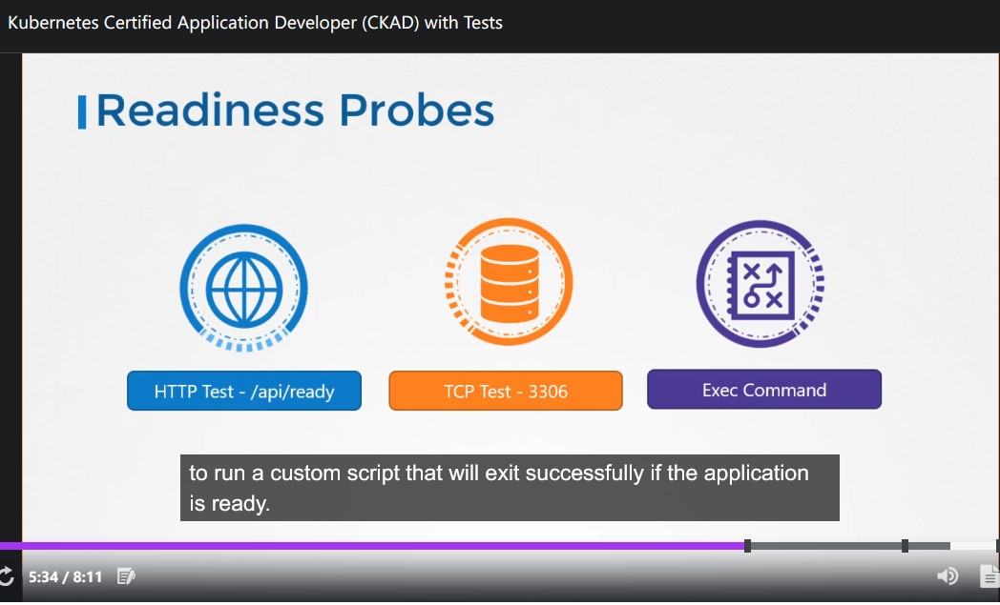
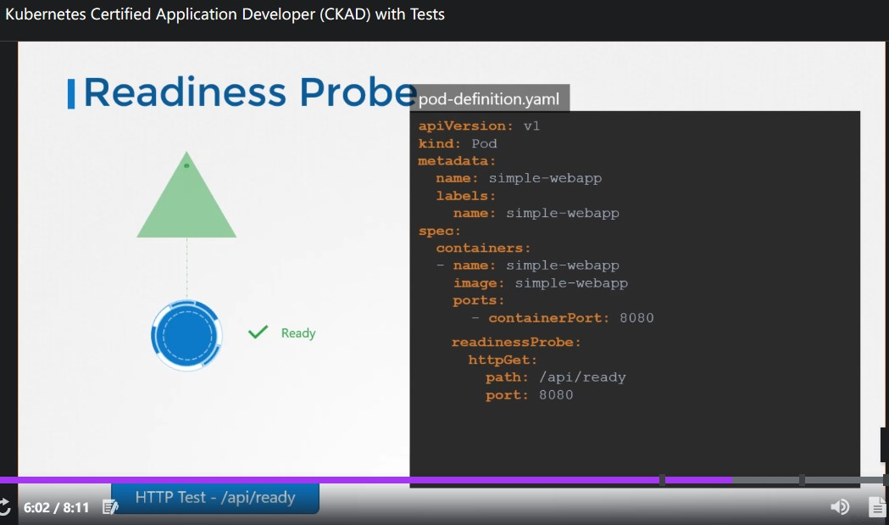
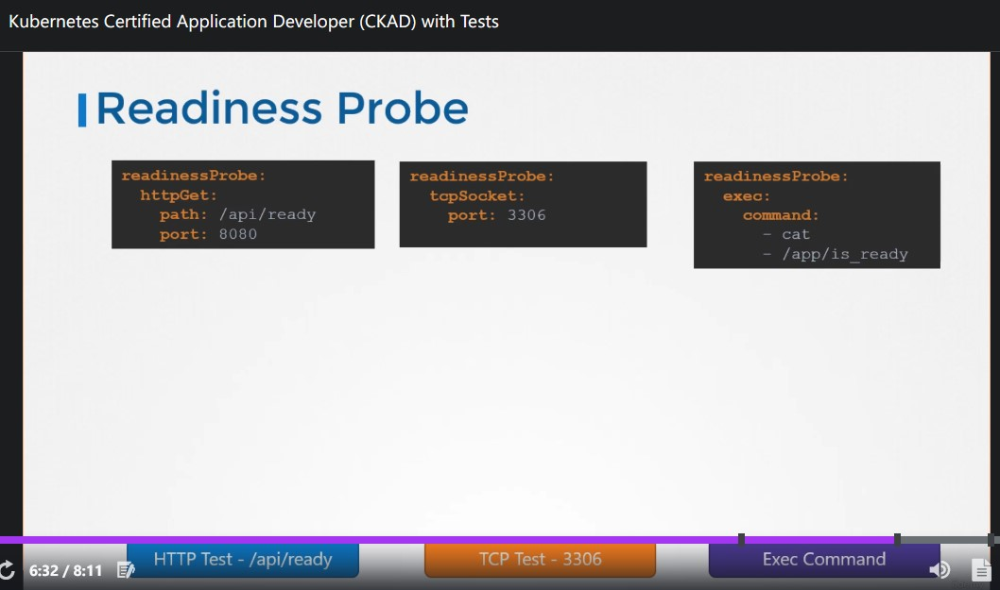
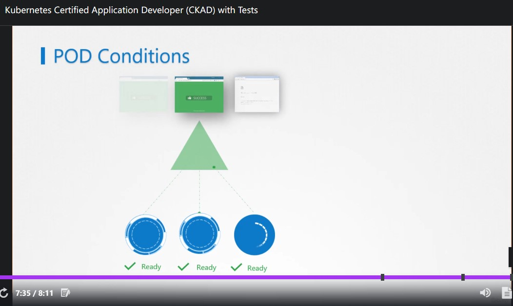
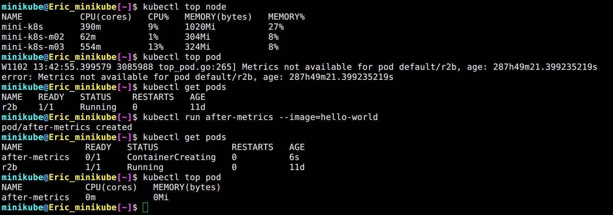

CKAD Note Section 5 Observability
Contents
70. Readiness and Liveness Probes
Readiness Probes
透過前面的章節我們可以得知 Pod 具有狀態 (status) 與 條件 (condition)，前者顯示 lifecycle 階段 (pending, containerCreating, running)
- pending: scheduler 正在安排
pod到 worker-node 上，或者有問題 (kubectl describe可以查) - containerCreating:
pod已經被放在 worker-node 上，正在建立容器 - running: 執行中
Condition 的部分就有點類似細項，透過 kubectl describe 可以觀察。

▲ pod condition 項目列表
不過在這麼多項目當中，在這個章節我們只關心 ContainersReady 與 Ready
依據不同 Application 種類，當 ContainersReady 後會需要一些時間來準備提供服務。所以當 Ready == True 時才是這個 pod 可以提供服務的時候。
這個章節主要是介紹如何請 K8s 去偵測 pod 裡面的服務 Are ready to serve。

▲ readiness probe method 總共有這幾個: HTTP GET / TCP / Exec command

▲ HTTP GET 範例

▲ 所有 method 範例
另外還有三個常用的參數: initialDelaySeconds, periodSeconds, failureThreshold 可以被設定
initialDelaySeconds: 首次探測前 delay，如果已知這個 Application 勢必會花超過 n 秒那就不用請 K8s 一開始就去煩人家。periodSeconds: How often，間隔多久探測一次 (單位: 秒)。failureThreshold: 最高失敗幾次，預設次數3(當達到上限，以 readniness probe 來說Pod會被 mark 成 un-ready)

▲ 如果在 pod 內沒有設定 readiness probe 的話，就很有可能發生 service 把流量導到尚未 ready to serve 的 pod 身上。
kubectl get pods 只能看到 status， kubectl describe pod 才能看到 condition。
71. Liveness probe
與 readiness probe 不同的是 liveness probe 偵測 App 的健康度，雖然說 K8s 偵測到 pod crash 會自動 restart (透過 kubectl get pod 可以查看 RESTART 次數) 但有些時候 pod 正常運作，但是裡面的 App 掛了，如果有用定義 liveness probe 的話，K8s 才能幫你 restart container。
76. Monitor and Debug Application
要對 K8s 做監控 (monitoring) 必須借助 metric server 例如: Promethues, Elastic Stack (ELK 之類的), DATADOG, dynatrace。
從 Kubernetes v1.1 開始原本的 Heapster 就即將退場 (deprecation)，取而代之的是 metrics server (對，就叫這個名子)
- metrics server 只把蒐集來的資料儲存在 RAM 裡面 (in-memory)。
- 每個 worker node 上面的 kubelet 除了負責接收來自 master node 的指令、建立
pod以外，其中的一個元件 cAdvisor 就是負責收集 metrics 透過 API 回傳給 metrics server。 - 如果使用 minikube 練習的話，透過
minikube addons enable metrics-server可以安裝，others 請參考官方頁面。

▲ metrics server 只能 監控/顯示 比它晚出生的 pod
Author 老柯
LastMod 2022-05-23 (38784de)